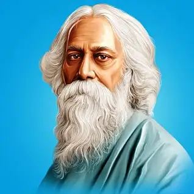

Abdulkalam
Abdulkalam
Avul Pakir Jainulabdeen Abdul Kalam was born on 15th october readMore
 lataMangeshkar
lataMangeshkar
Lata Mangeshkar was born on 28 September 1929 readMore
kapilDev
Kapil Dev Nikhanj was born on 6 January 1959 readMore

rabindranathTagore
Rabindranath Tagore was born on 7 May 1861 and died on 7 August 1941 readMore